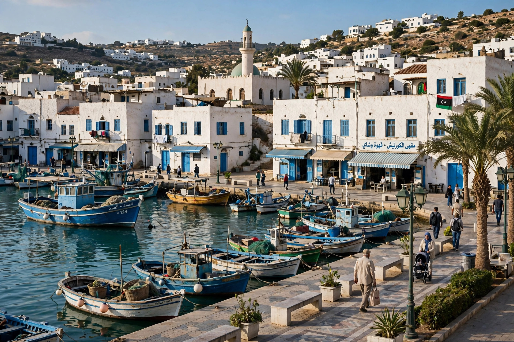

From Wikipedia, the free encyclopedia
| Khoms | |
|---|---|
 | |
| Country | Libya |
| District | Murqub |
| Elevation | 2 m (7 ft) |
| Coordinates | 32°39′N 14°16′E |
Khoms (also spelled Al Khums; Arabic: الخمس) is a Mediterranean port city in the Murqub District of Libya, about 100 km (62 mi) east of Tripoli on the coast of Tripolitania. The city lies near the ruins of ancient Leptis Magna, one of the most famous Roman sites in North Africa.
The town's name is said to derive from al-khums, "the fifth" — the share of produce (one-fifth) traditionally levied as tax on local farms by the region's rulers. During the Ottoman period Khoms was a modest coastal town and administrative centre in the Sanjak of Tripoli. Italian forces occupied it in 1911 during the Italo-Turkish War, and under Italian rule the town's port and agricultural hinterland were developed. Following Libyan independence Khoms grew as a fishing, agricultural and light-industrial centre serving the fertile Jabal Nafusah foothill plain; nearby are cement plants and the Khoms power station, which suffered damage debates during the 2011 Libyan civil war, when the town was contested between Gaddafi loyalists and rebel forces.
Khoms is a regional market for olives, dates, grapes and vegetables grown on the coastal plain. Its small harbour handles fishing vessels and coastal traffic; the coastal highway between Tripoli and Misrata passes through the city. The ruins of Leptis Magna, about 3 km east, are the district's major tourist attraction.